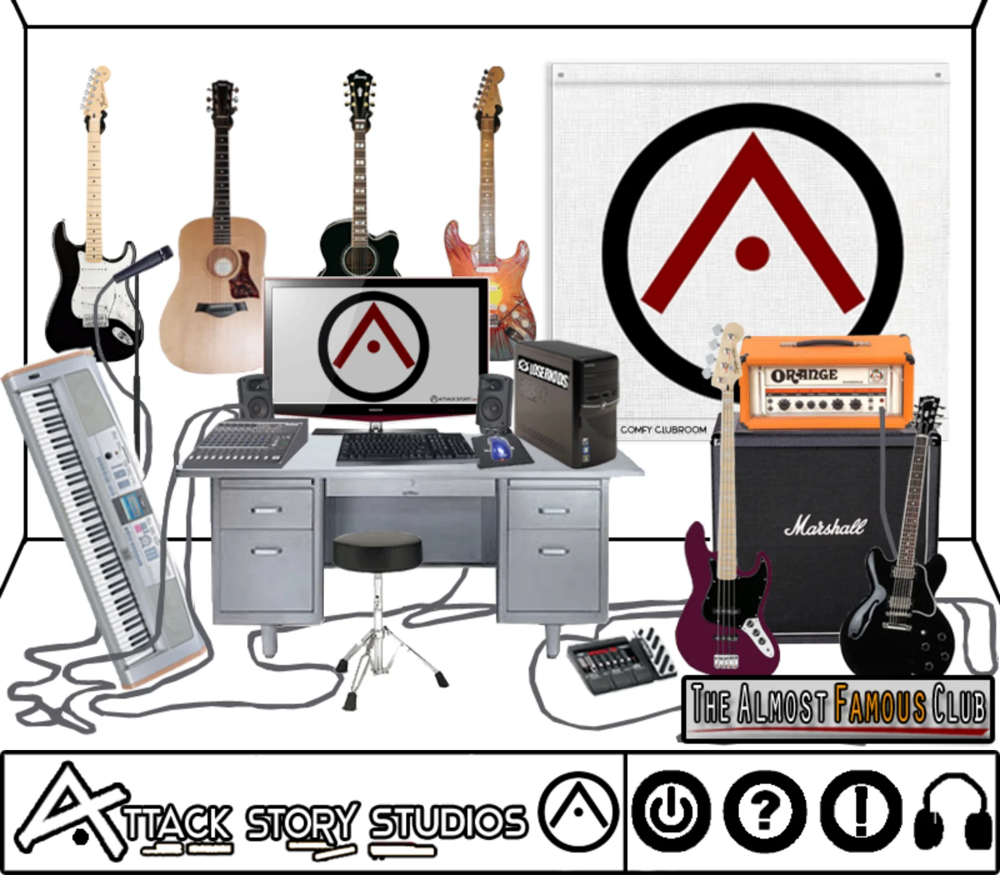
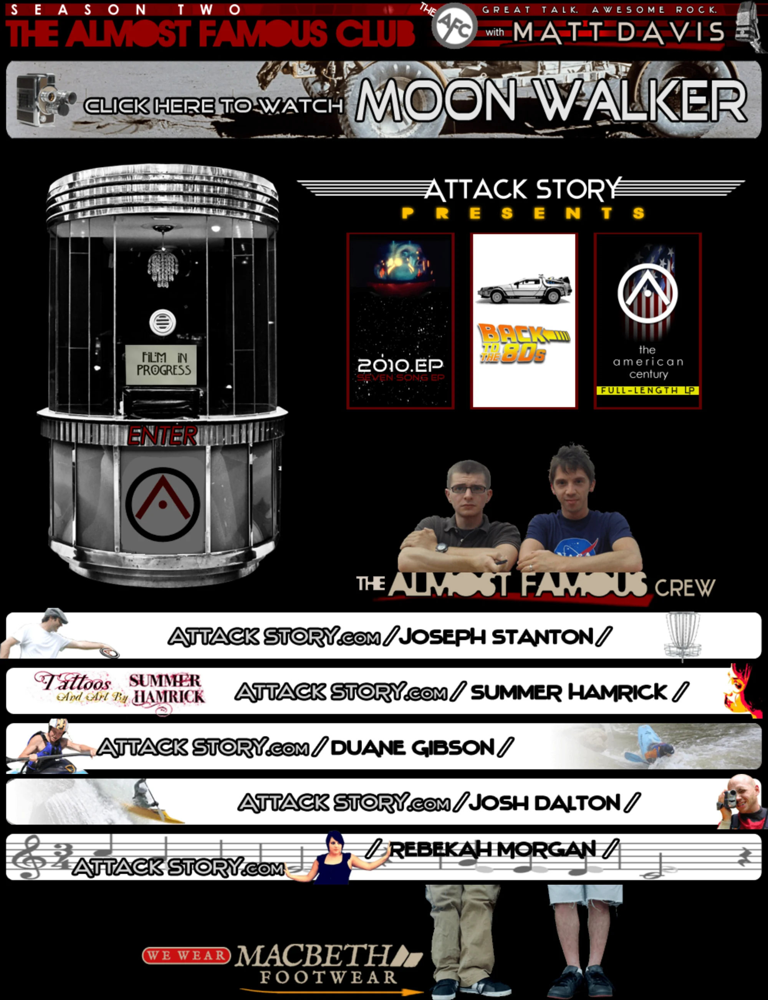
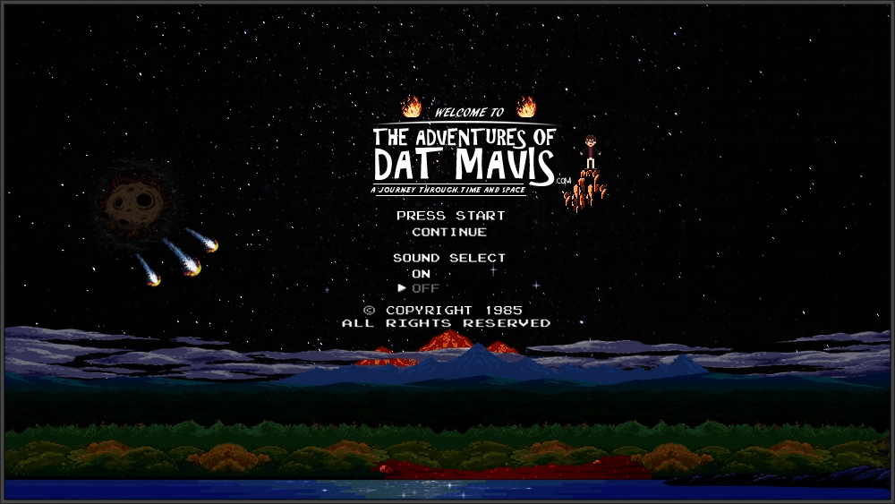
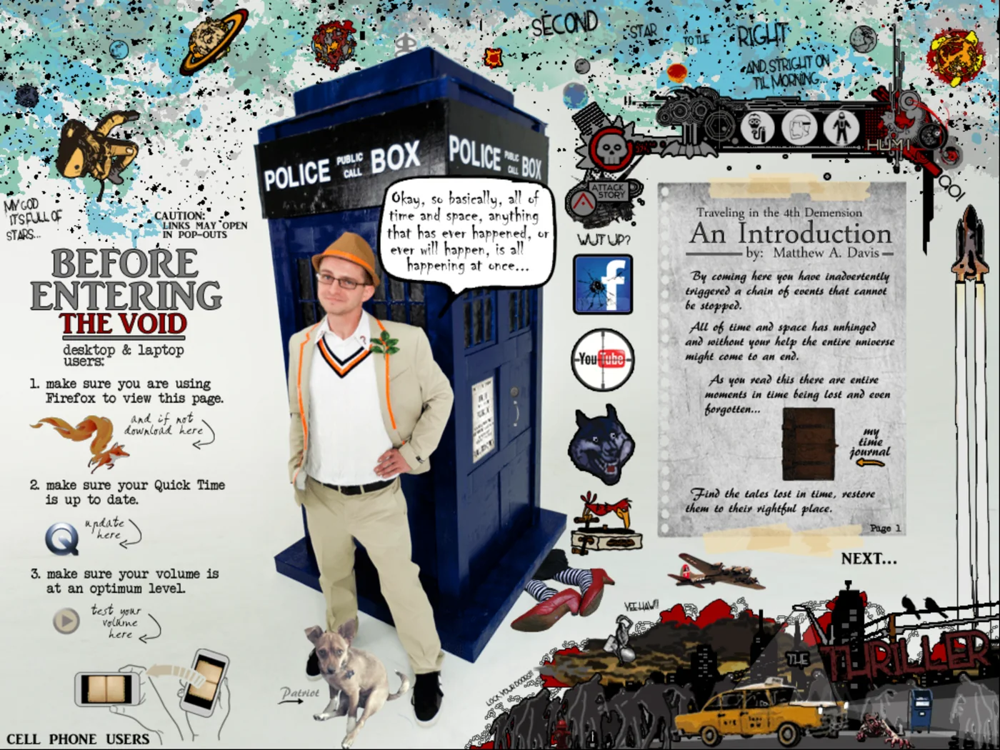
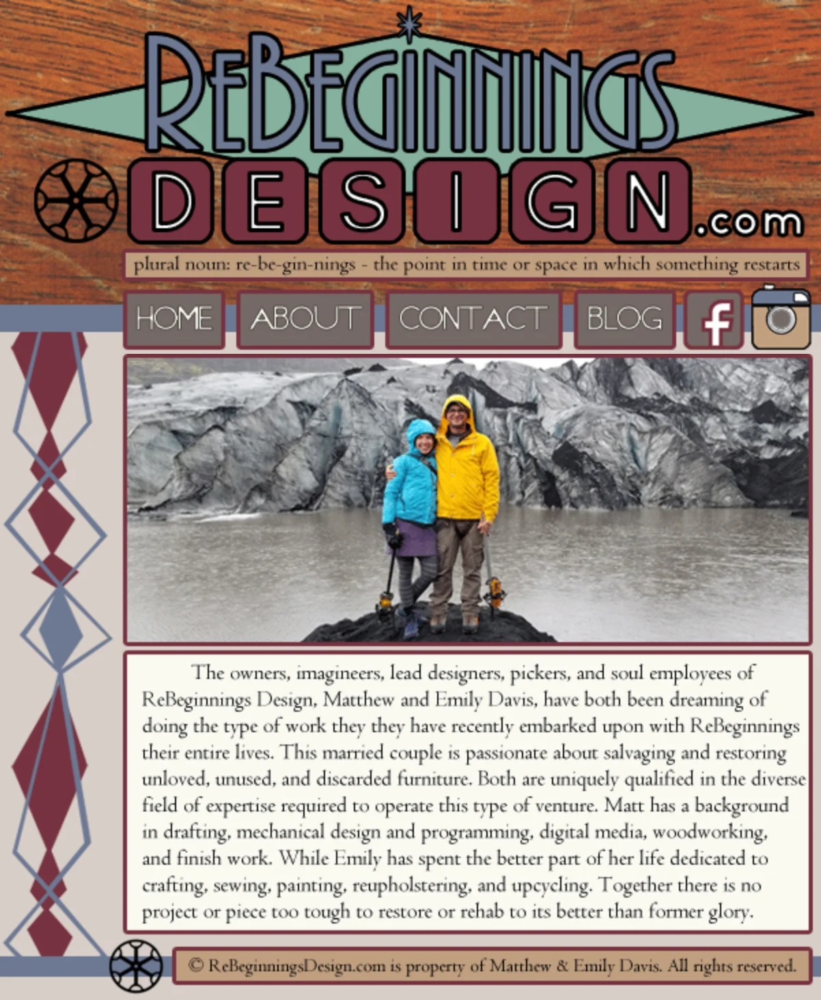
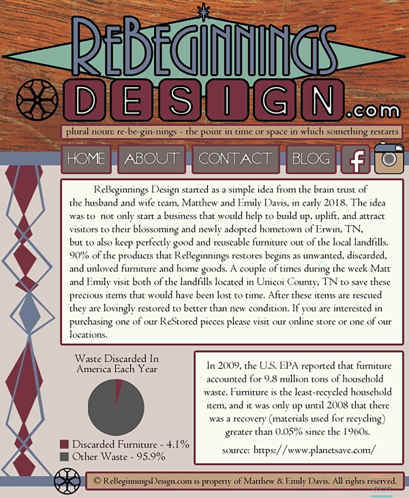
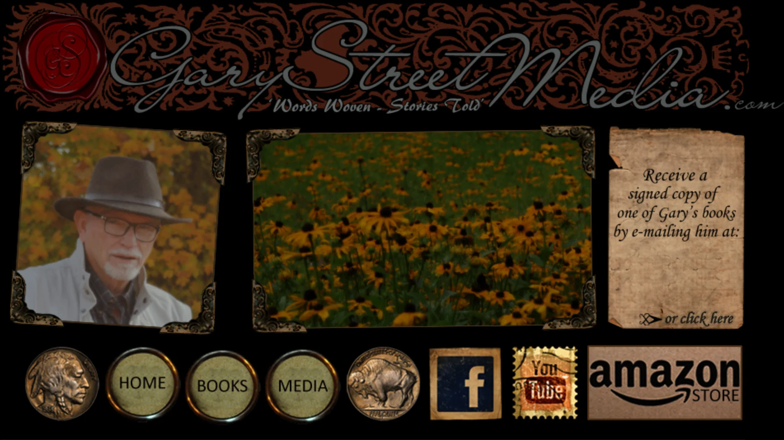
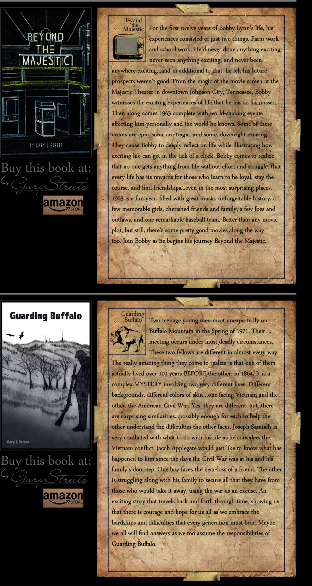

Five Sites · 2010 — Present
Web Design
Five sites across fifteen years, ten screens. One is the day job. The other four were built off the clock — for a band, a novelist, a furniture business and nobody in particular, with no framework, no platform, no template and no stylesheet worth the name: HTML tables, images cut by hand in Photoshop, and a rollover state drawn for every single one of them.
Every screen below is a screenshot, not a mockup or a rebuild — the live site as it serves today, and the rest opened from their original files in a current browser.
The Day Job
The day job, and the only site on this page you can still open: sharedhealthservices.com. Everything after it was built off the clock.
![Full-page capture of the Shared Health Services home page: a logo and illustrated staff ribbon reading Real People, Real Support, Real Results, a navigation bar and search field, a hero video still of two clinicians at a monitor captioned Pursue Excellence, No Exceptions, then sections on program design, compliance and reimbursement, four testimonial cards from wound care directors and managers, a place-of-service code matrix, a contact block, three clinical blog cards and a footer carrying three award seals.](img/web-shs-homepg.webp)
It is also the only one here not hand-cut — it runs on Wix, and that is the point rather than the caveat. A four-person corporate team has to be able to add a post, swap a photo and correct a phone number on a Tuesday, without opening a code editor. The 2011 pages below prove the craft was there. This one is what the craft is for.
![Full-page capture of the Shared Health Services services page: a logo and illustrated staff ribbon, a navigation bar and search field, a heading reading Wound Care Services You Can Trust beside a honeycomb of hexagonal icons for values including honesty, respect, integrity, compliance, support and results, two four-panel strips of illustrated clinical scenes, a body section headed Built to Support Designed to Scale, a discovery-call prompt, a six-category grid of support services, and a footer with contact details and three award seals.](img/SHSOurServicesPg.webp)
The illustration program running through it is the same one on the design page.
Before It Was Anyone's Job
In order — and the first one is not shown. Attack Story's original site, four rooms, each its own full-screen Photoshop comp sliced into a table, was live by December 2010 and survives only in the Internet Archive: the images are long gone, but the markup still names all four source files.


Both lifting each other, and both lifting everyone they put on. That was the model, and the site is built to run it: a shared front door, with rooms behind it that belong to somebody else.

Which means the screen after this one is not a front door. It is level one.

The navigation is written in the world's own language: the link to Neverland isn't labeled Neverland — it's the words second star to the right, and straight on till morning, lettered across the sky. And in the lower left, a separate set of instructions for cell phone users, in 2015.
![An open leather journal photographed on black. The left page carries a small illustration of a figure holding a banner reading The Last Page, a centered quotation set in serif type, and a handwritten closing line at the foot. Year tabs run down the left edge from 2006 to 2013, with 2014 and 2015 projecting further out, and a tab at the bottom reading Attack Story. The right page holds a taped library card pocket headed TARDIS Archive, with a date-due card listing borrowers and a small heraldic crest.](img/LastPage.webp)
On the facing page, a library pocket for a book nobody could borrow: A Journal of Impossible Things, shelved at BL 5793 MYST, signed out by John Smith, Ronald Reagan, James Dean and Macbeth. The quotation on the left is Cornelia Funke's, on stories not ending where the book does. The line beneath it is handwritten, and it is the last thing on the site.

The detail worth stopping on is directly under the logo, where a site that sells restored furniture quietly defines its own name — plural noun: re·be·gin·nings — the point in time or space in which something restarts. That is the whole business model, set in 11px type, above the fold.
Note also the canvas: 601 pixels wide, fixed. That is what a small site looked like before responsive layout was the default — built to one width and no other, on the assumption that everyone arrived at a desk.

The part worth stopping on is the bottom half. A furniture restoration business arguing its own case with data: a pie chart of American household waste, and an EPA figure on furniture being the least-recycled household item — cited, on the page, below the fold. Nobody asked for that. It is there because somebody wanted the claim to hold up.


The design is themed to the work rather than decorated: a wax seal, filigree, aged paper torn at the edges, social links as postage stamps, and a navigation bar whose buttons are buffalo nickels — flanked, if you look, by the actual obverse and reverse of the coin.
But the part a screenshot can't show is the dates on the files. Books one through four are June 2018. Book five is October 2018. Book six is May 2019. Book seven is March 21, 2020. Each one meant a new cover cut, a new parchment panel set, a new nickel drawn and the page rebuilt around it. This is not a site that was built. It's a site that was kept.
Two of the seven are shown. The real page runs 6,832 pixels — the same module, seven times. He finished ten novels and a book of poetry in all; the site carries the seven that existed when it was last updated.
One element has been removed from this screenshot: a panel inviting readers to email Gary directly. The address is a private one belonging to a man who has died, and it is not reproduced here. Nothing else on this screen has been altered.
103 images, and every one of them has a second state — a hover variant, drawn separately and preloaded in JavaScript before the page finishes opening. The count of actual drawn artwork is therefore roughly double what any screenshot of it can show.